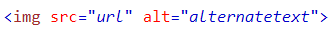
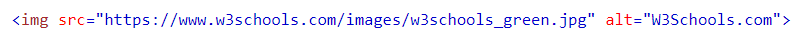

Images can improve the design and the appearance of a web page.
Syntex
The required alt attribute provides an alternate text for an image,
if the user for some reason cannot view it
(because of slow connection, an error in the src attribute, or if the user uses a screen reader).
To point to an image on another server, you must specify an absolute (full) URL in the src attribute
